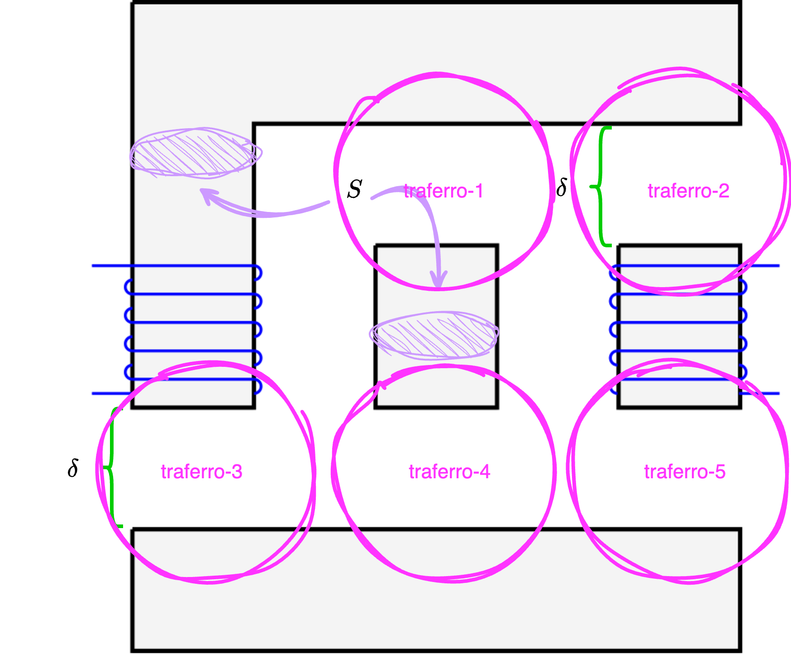

Definizione - Rappresentazione a parametri concentrati
Considerando un generico circuito magnetico, è possibile utilizzare una rappresentazione a parametri concentrati al fine di semplificare l'analisi. È infatti possibile stabilire una relazione tra la rappresentazione a parametri distribuiti e quella a parametri concentrati.
Definizione - Rappresentazione a parametri concentrati di un tratto di materiale
Considerando un generico tratto di un circuito magnetico  di valore \[ \mathcal{R} = \frac{L}{\mu_0 \cdot \mu_R \cdot S} \] dove
di valore \[ \mathcal{R} = \frac{L}{\mu_0 \cdot \mu_R \cdot S} \] dove
è possibile rappresentarlo come una riluttanza \( \mathcal{R}\)
- \( L\) è la lunghezza del tratto di materiale;
- \( \mu_0\) è la permeabilità magnetica nel vuoto;
- \( \mu_R\) è la permeabilità magnetica del materiale;
- \( S\) è la superficie della sezione del tratto di materiale.
Definizione - Traferro
In un circuito magnetico si definisce traferro lo spazio che si trova tra due parti del circuito magnetico.
Nei motori elettrici, è lo spazio necessario affinché tali parti possano ruotare.
Nei motori elettrici, è lo spazio necessario affinché tali parti possano ruotare.
Definizione - Rappresentazione a parametri concentrati di un traferro
Considerando un traferro presente in un circuito magnetico
è possibile rappresentarlo come una riluttanza \( \mathcal{R}\)
di valore \[ \mathcal{R} = \frac{\delta}{\mu_0 \cdot S} \] dove
- \( \delta\) è la distanza tra le due parti del circuito;
- \( \mu_0\) è la permeabilità magnetica nel vuoto;
- \( S\) è la superficie della sezione trasversale del traferro, ovvero l'area attraverso cui "passano" le linee di flusso. Considereremo di approssimarla alla sezione del tratto magnetico.
Nota bene - Altra approssimazione della sezione trasversale
Considerando che il comportamento delle linee di campo in un traferro è il seguente
si ha che un'altra possibile approssimazione della superficie \( S\) è \[ S = \pi \cdot (r + \delta)^2 \] dove \( r\) è il raggio del materiale ferromagnetico.
Definizione - Rappresentazione a parametri concentrati di un avvolgimento
Considerando un avvolgimento presente in un circuito magnetico
è possibile rappresentarlo come una generatore di tensione
che impone una forza elettromotrice di valore \( N \cdot I\), dove:
- \( N\) è il numero di spire dell'avvolgimento;
- \( I\) è la corrente imposta sugli avvolgimenti;
Nota bene - Regola della mano destra in un solenoide
Graficamente, si ha che tale procedimento può essere rappresentato come  nel caso la corrente scorra "dal basso verso l'alto".
nel caso la corrente scorra "dal basso verso l'alto".
nel caso la corrente scorra "dall'alto verso il basso" mentre nel seguente modo
Nota bene - Attenzione!
Considerando di modellare un avvolgimento attorno ad un materiale ferromagnetico, è necessario ricordare che tale materiale nella rappresentazione a parametri concentrati corrisponde ad una riluttanza. Si avrà quindi che il seguente tratto di circuito
corrisponde alla seguente rappresentazione
Esempio - Rappresentazione a parametri concentrati di un circuito magnetico
Considerando il seguente circuito magnetico
caratterizzato da:
- un materiale con permeabilità magnetica relativa \( \mu_R\);
- un avvolgimento di \( N_1\) spire in cui scorre una corrente \( I_1\);
- un avvolgimento di \( N_2\) spire in cui scorre una corrente \( I_2\);
- una sezione del materiale pari a \( S\)
Rappresentazione del circuito a parametri concentrati
Per calcolare i flussi del circuito è necessario convertire il circuito dalla rappresentazione a parametri distribuiti in quella a a paramentri concentrati. Si ha infatti che:- gli avvolgimenti possono essere rappresentati da dei generatori di tensioni rispettivamente di valore \( fmm_1 = N_1 \cdot I_1\) e di valore \( fmm_2\), ovvero
- i tratti di materiale ferromagnetico possono essere rappresentati ognuno da una riluttanza di valore \( \mathcal{R}_{mat}\) uguale a \[ \mathcal{R}_{mat} = \frac{L}{\mu_0 \cdot \mu_R \cdot S} \] È da notare che sono inseriti come tratti anche i nuclei degli avvolgimenti. Inoltre non si considera come tratto distinto il "collegamento" corrispondente al traferro dato che ha dimensione trascurabile (il disegno non è in scala in quanto rappresenta il traferro di una dimensione maggiore di ciò che sarebbe nei dati e nella realtà).
- i traferri possono essere rappresentati ognuno da una riluttanza di valore \( \mathcal{R}_{tra}\) uguale a \[ \mathcal{R}_{tra} = \frac{L}{\mu_0 \cdot S} \] (dove consideriamo come sezione \( S\) del traferro quella dei tratti ferromagnetici).